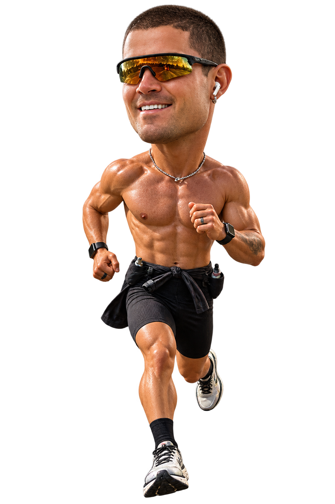

Food
What does Will eat?
Simple, repeatable fuel wins: carbohydrates in motion, fast protein after, electrolytes everywhere, and meals chosen for performance over novelty.

50 marathons. 50 states. 24 days.William Goodge is attempting to become the fastest person ever to run a marathon in all 50 U.S. states.
Driven by the loss of his mother, Amanda, and a mission to support people affected by cancer.
Now he's taking on his biggest challenge yet. And Team Goodwin is going with him.
Follow every marathon, every flight, every finish line and everything it takes to chase a world record across America.
FOLLOW THE RECORD ATTEMPT · RUN WITH WILL · SUPPORT THE MISSION
William Goodge will run one marathon in every U.S. state in a compressed 24-day window, with Goodwin coordinating the travel, recovery, and live operations behind the attempt.
Read the missionMeet the British ultrarunner whose previous transcontinental efforts and cancer-fundraising mission shape every mile of Mission America.
Read the bioThe 50-state route is built around an attempt to set a Guinness World Records mark for completing a marathon in every U.S. state.
View the attemptFollow William and Team Goodwin in real time — where he is, what he’s run, what’s finished and where we’re headed next.
50 marathons. 50 states. 24 days. Watch the route become a moving crew diary, one finish line and one boarding window at a time.

Runner Flight RVOctober 9, 2026 · Honolulu, Hawaii
The clock starts in Honolulu. Twenty-four days later — and 49 marathons later — William is scheduled to cross his final finish line at the New York City Marathon.
Until then, we count down.
After that, we count miles.
Finish lines. Airport runs. Weather changes. Bad food decisions. Good legs. Bad legs. Lost bags. Tiny victories. Whatever happens out there, you’ll find it here.
Opening miles, first transfers, and the early rhythm from Hawaii through the western states.
The longest middle stretch, where consistency, recovery, and operational handoffs matter most.
The final run-in toward New York, with the archive ready for finish-line updates and recap content.
Finish lines. Airport runs. Weather changes. Bad food decisions. Good legs. Bad legs. Lost bags. Tiny victories. Whatever happens out there, you’ll find it here.
Simple, repeatable fuel wins: carbohydrates in motion, fast protein after, electrolytes everywhere, and meals chosen for performance over novelty.
The block is built around durable aerobic volume, back-to-back long efforts, strength maintenance, and recovery rehearsed under travel pressure.
Each transfer is engineered: rehydrate, refuel, reset the body, protect sleep, prepare the kit, and move cleanly to the next start line.
Goodwin coordinates the movement between stops with the same open-book precision behind the route map: aviation, ground transfers, timing, and recovery windows working together.
The kit stays simple and proven: rotating shoes, reliable run apparel, hydration, nutrition, recovery tools, and tracking gear that can hold up to daily marathon mileage.
Sleep is treated as part of the performance system. The team protects quiet windows, manages travel timing, and keeps recovery repeatable from one city to the next.
The final donation destination is not live yet. This box is ready for the confirmed campaign link once the public donation page is approved.
Will runs in memory of his mother, Amanda, and in support of everyone fighting cancer.
The full FAQ includes donation details, what Will is running for, and the rest of the Mission America basics.
Join William for part of a marathon, bring your run club, show up at a finish line or just come make some noise.
Help turn the miles into support for people affected by cancer.